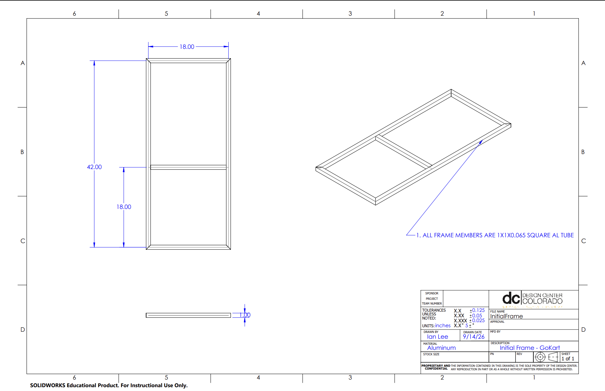

Our team's goal is to build a vehicle powered by a Ryobi cordless drill. It needs to support one driver and complete several maneuverability and load-bearing competitions without failing, and along the way we'll present a PDR and CDR to the manufacturing engineers in the machine shop for approval.
Requirements
- Minimum of three load-bearing wheels
- Shorter than 7 ft, under 50 lbs
- No modifications to the drill itself
- Custom-manufactured components for the vehicle
- Total cost under $200
My role
Our team of six splits into a project manager, two CAD engineers, two manufacturing engineers, and me as the systems and testing engineer. So far I've drafted the overall timeline for the semester — meetings, part acquisition, and manufacturing dates — and written our requirements sheet, defining what the vehicle shall do versus what it should do. As a team we've started initial modeling of the frame and are brainstorming the components we'll need.